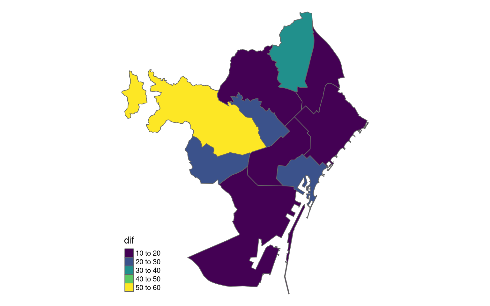
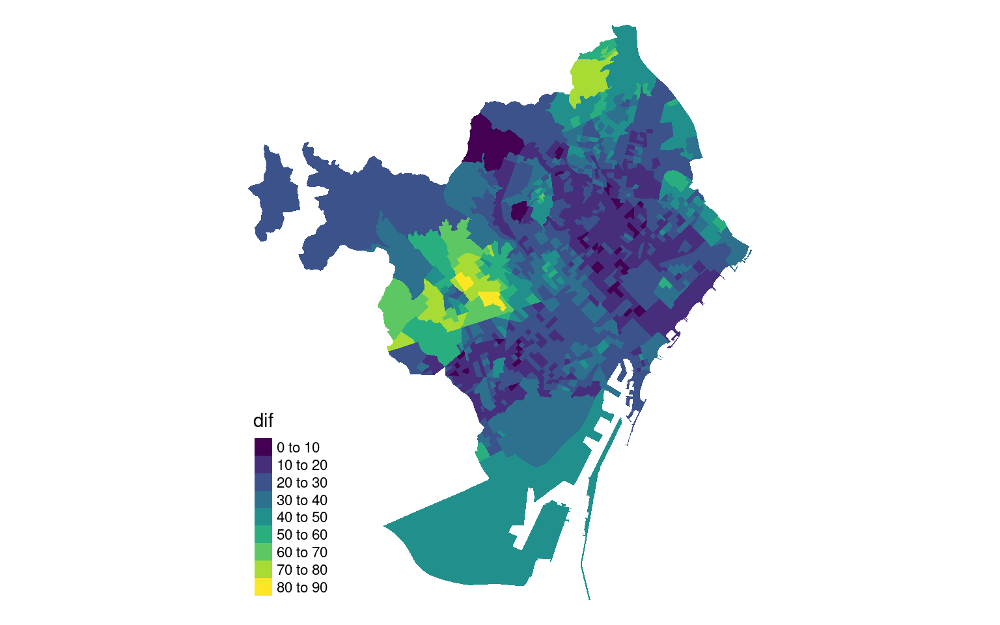

Municipals 2023 a Barcelona: on es vota més semblant a la ciutat?
R
ggplot2
tmap
sf
eleccions
Author
Marc Bosch
Published
February 6, 2023
Diumenge passat van ser eleccions: més enllà de si estem contents o no dels resultats, em feia una pregunta: on voten més semblant al resultat global de la ciutat? Aquí mirarem quins districtes, barris i seccions censals s’assemblen més al resultat final de la ciutat tenint en compte només els vots a partits amb més d’un 3% de vot i vots en blanc. ### Com vam votar?
Per gent despistada, recordem els resultats a nivell de ciutat.
Fins aquí molt bé. Ara toca mesurar la diferència amb districtes, barris i seccions censals. Com ho fem? Doncs prou senzill: calculant la diferència en valor absolut entre el percentatge a nivell de districte, barri o secció censal i el total de la ciutat i sumant-ho. Com més alt és el resultat, més diferència.
unitats |>filter(SCONJ_DESC =="Districte") |>select(NOM) |>left_join(res_districte, by =c("NOM"="Nom_Districte")) |>tm_shape() +tm_polygons(col ="dif",palette ="viridis") +tm_layout(frame =FALSE,legend.format=list(fun=function(x) round(x*100,0)))

Sense cap sorpresa, Sarrià-Sant Gervasi i Nou Barris tenen les diferències més grans. Horta-Guinardó i Sant Martí les més petites. Malgrat tot, un districte és molt gran i molt divers: què passa si ho mirem a nivell de barri?
Barris
Show the code
unitats |>filter(SCONJ_DESC =="Barri") |>select(NOM) |>left_join(res_barri, by =c("NOM"="Nom_Barri")) |>tm_shape() +tm_polygons(col ="dif",palette ="viridis") +tm_layout(frame =FALSE,legend.format=list(fun=function(x) x*100))
Vaja, la cosa canvia força, no? Veiem que les diferències més grans ara són explícitament a Pedralbes i a les Tres Torres (més grans del 70%!) i les més petites a la Vila Olímpica, Can Baró i Navas. La resta de Sarrià-Sant Gervasi tenen diferències força grans i a Nou Barris ronden entre el 30 i el 60%. Cap sorpresa, tampoc.
Seccions censals
Anem al detall: quines meses electorals són més semblants a tota la ciutat? A quins col·legis les sensacions dels apoderats van ser les més encertades?
Show the code
# codis de districte i barricodis <- unitats |>st_drop_geometry() |>filter(SCONJ_DESC =="Districte") |>select(NOM, DISTRICTE) |>rename("Nom_Districte"="NOM")coba <- unitats |>st_drop_geometry() |>filter(SCONJ_DESC =="Barri") |>select(NOM, BARRI) |>rename("Nom_Barri"="NOM")res_seccens <- res_seccens |>left_join(codis, by ="Nom_Districte") |>left_join(coba, by ="Nom_Barri") |>mutate(Seccio_Censal =str_pad(Seccio_Censal, 3, pad =0))unitats |>filter(SCONJ_DESC =="Secció censal") |>left_join(rename(res_seccens, "SEC_CENS"="Seccio_Censal"), by =c("SEC_CENS", "BARRI", "DISTRICTE")) |>tm_shape() +tm_fill(col ="dif",palette ="viridis",n =8) +tm_layout(frame =FALSE,legend.format=list(fun=function(x) x*100))

Per seccions, veiem exactament el mateix però apareixen algunes seccions censals amb més diferències a Sant Gervasi-Galvany amb diferències de més de 80 punts percentuals. Ara, on són les seccions censals amb menys diferència?
En veiem unes quantes a Sants i a Les Corts i en dues línies verticals al Baix Guinardó, la Dreta de l’Eixample, la Sagrada Família, el Fort Pienc i Navas i el Congrés i els Indians.
Així, quin recompte haurem d’anar a veure el 2027 si volem saber què sortirà? Comptant que les coses no canviïn gaire, aquí en teniu uns quants.